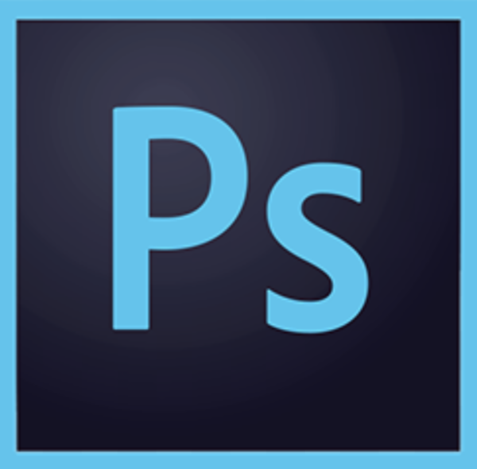
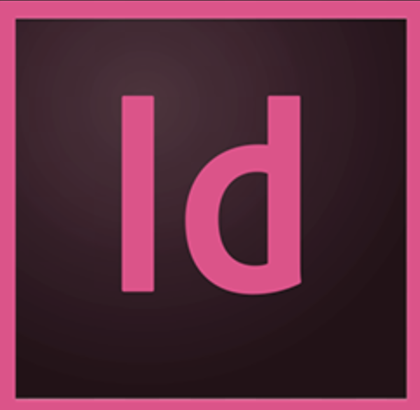
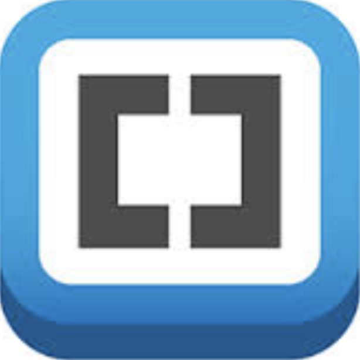
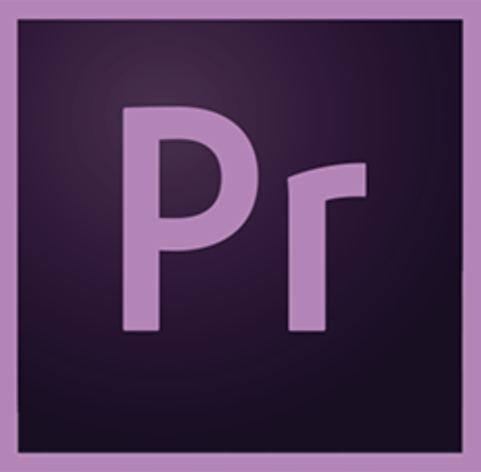
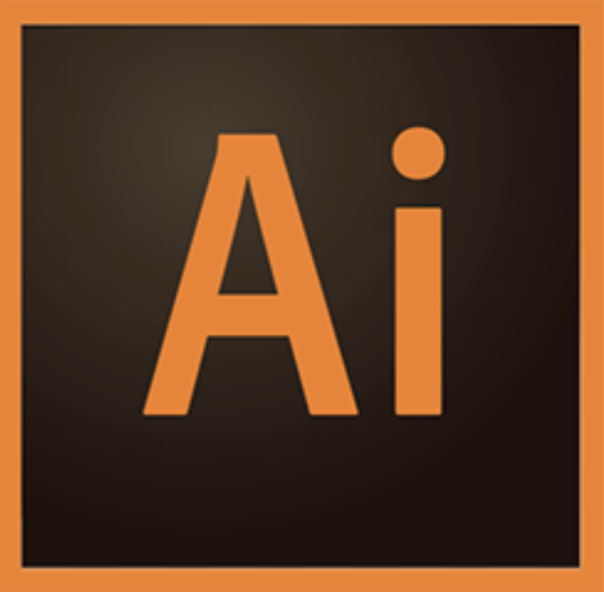
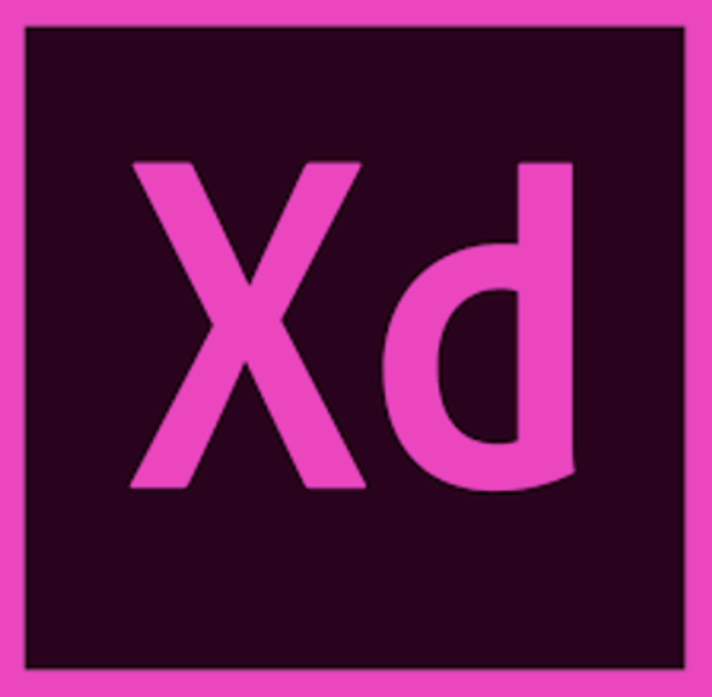

TEMA 01: Grundlæggende HTML
Arts and Crafts
I tema 01 har vi lært layout metoder, heribland Flexbox. Jeg brugte Flexbox i denne opgave til at strukturere mit website og dets elementer.
Årsagen til at jeg valgte at bruge Flexbox frem for andre layout metoder, er fordi Flexbox gør det nemt at lave websitet responsivt. Med Flexbox er det ikke nødvendigt at bruge position.
Media Queries og forskellige størrelser af splashbilledet brugte jeg for at få indhold og design til at passe sammen i de forskellige skærmstørrelser.
Moodboard:

Opgaven gik ud på at vi fik tildelt en bestemt stilart, som vi skulle arbejde med og designe et website til. Vi lærte at lave vores egne splash billeder til websitet, samt at udvælge de rigtige farver og typografi, der passer til stilarten. Til dette brugte vi Moodboards for at skabe et overblik over stilartarten, og til at samle inspiration til websitet.
Jeg brugte grids til at design og proportionere websitet.
Programmer:

Link til opgave 01.04.02_ responsive_site_v2

TEMA 02: Grundlæggende video
Pilot opgave
I tema 02 har vi lært om dramaturg og interviews med fokus på b-rolls.
For at skabe en visuelt repræsentation af hvordan interviewet ville komme til at se ud, lavede jeg i dette projekt et storyboard til hver frame der skulle optages, Det resulterede også at vi sparede tid ude ved optagelserne, da vi var forberedte på hvilke frames der skulle optages.
Vi optog en masse B-rolls, som vi brugte til at overlappe i vores interview. Interviewet blev redigeret i Premiere Pro, og jeg brugte ‘color key’ til at redigere i farverne og gøre dem mere plan.
Programmer:

Link til opgave 02.01.01 Pilotopgave.

Redesign af hjemmeside
Dette projekt havde til formål at vi skulle redesigne en selvvalgt virksomheds website. Min gruppe og jeg valgte
www.petitgas.dk
Vi valgte at lave en bert-test af websitet, for at undersøge hvad folk syntes om designet. Det resulterede i at folk synes det var et kedeligt, afvisende website. Derudover lavede vi også 5-sekunders test, som fortalte os at hjemmesiden er svær at forstå ved første øjekast. Vores opgave var at skabe et bedre alternativ.
Vi forbedredte os på et interview med indehaveren af Petitgas, ved storyboard og interviewguide, og klippede det sammen i Premiere Pro.
Vi lavede Wireframe, Style tile, Moodboard til hjemmesiden samt et layout diagram. Alt dette, skulle hjælpe os igang, og skabe en stil for redesignet.
Vi kodede websitet i HTML og CSS, og der er ikke nogle fancy JavaScript funktioner, da dette ikke var lært endnu.
Vi fik som slut feedback af andre grupper på vores websitet, som sagde at vores Vector hatte ikke passede ind i vores design.
Programmer:

Link til opgave 02.02.06 redesign af website.

Link til opgave 02.02.05 endeligt dokumentationssite.

TEMA 03: Animation
Udvidet style tile
Mit style tile indeholder, moodboard, figurdesign, grafiske elementer som visuelt forklarer formgivningen, farver, typografi og UI elementer.
Jeg tegnet et aktivitetsdiagram, for at få et overblik over spillet og dets aktiviteter. Derudover lavet jge også et statemachine diagram, som hjælp til kodning af spillet i JavaScript.
Link til opgave 03.01.04 scene, samt udvidet style tile

Animations opgaven
I tema 03 har vi lært at arbejde med de forskellige position metoder. Jeg valgte at bruger position relative og position absolutte til at udfører denne opgave.
Vi lærte om forskellige animationspricipper. I mit animationsspil spil, Cheese Pleease, gjorde jeg brug af reglen om proportioner i forhold til at gøre hovedet større end kroppen. Dette skaber et dynamisk design.
Derudover brugte jeg gradient tool til at skabe en form for solid drawing i mit design. Jeg fokuserede på at bruge runder former for at gøre det mere venlig og sødt at se på. Jeg var inspireret af stilen Kawaii samt Lisa Vertudaches karakter design.
Jeg gjorde brug af sprite animation til mine indstillingsknapper i spillet. Derudover er der brugt lydeffekter, java script funktioner samt keyframes.
Herunder ses eksempel på en keyframe animation, som fik mine katte og oste til at bevæge sig op og ned.
Eks. På keyframe animation:
.up_down {
animation-name: up_down_kf;
animation-duration: 1.5s;
animation-iteration-count: infinite;
}
@keyframes up_down_kf {
0%,
100% {
transform: translateY(17vw);
}
50% {
transform: translateY(0vw);
}
}
Programmer:
Link til opgave 03.03.03 - Animations-opgaven.

Projekt: Sex og Samfund
I dette projekt fik tildelt kunde, privatsnak.dk, som vi skulle lave en spil for. Målgruppen var 13-15 årige.
Vi fulgte et fast farveskema, som blandt andet var inspireret af privatsnaks hjemmeside.
I illustrator tegnede jeg en sprite animation af mand der går, samt et forlænget baggrundsbillede. Jeg sammensatte dette i Brackets, og ved brug af HTML, CSS og JavaScript, fik manden til at gå i uendelighed på baggrundsbilledet.
Til sidst i projektet skulle vi udvikle en ferniserings stand, hvor vi skulle præsentere vores produkt. Resultatet af standen blev super, og målgruppen kunne lide vores spil.
Programmer:
Link til opgave 03.05.01 - Projekt: Sex og Samfund

TEMA 04: Grundlæggende UX
I tema 04 har vi lært at arbejde i Xd samt gøre brug af forskellige UX metoder som for eksempel Brugertest.
Design Sprint og web prototype
Link til opgave 04.02.01 – Design Sprint
I dette projekt har vi redesigne fronter.
Jeg startede med at lave en User Brief og User Research af kunden og målgruppen. Her fandt jeg frem til at udfordringen var fronters uoverskuelige stisystem, hvilket resulterede i en dårlig brugervenlighed.
Som resultat af mine Bruger Tests, fandt jeg ud af hvad fungerede og ikke fungerede ved hjemmesiden. Prioriteringen blev derfor et velfungerende skema, et overskueligt stisystem i forhold til at findes opgave og materiale samt en nem og overskuelig måde at kommunikerer til de andre studerende på.
Første arbejdsproces fulgte Design Sprint, nemlig Map, Sketch, Decide og Prototype.
Vi fik tildelt et Long Term Goal samt nogle Sprint Questions som vi skulle arbejde ud fra. Herefter lavede vi et map, med ‘de studerende’ som Actor og ‘de studerende bruger frontere’ som goal.
Jeg arbejde med HMW spørgsmål, lavede lightning demo og tegnede sketchers af mine ideer til redesignet. Derudover lavede jeg også Storyboard med de forskellige steps, som jeg senere lavede en prototype af i Xd.
Programmer:

Link til opgave 04.02.01 – Design Sprint

Link til opgave 04.03.01 – Web prototype
(skal ses i mobil format)

Design Sprint: Native App
I dette projekt har vi lavet en native app til kea. I vores tilfælde en app til Kea’s kantine.
Først arbejde med The Four-Step Sketch, hvor vi nedskrev noter, ideer, lavede crazy 8’s og tegnedee storyboard. Denne process presse os til at tænke ud af bokse og komme på nye spændende idéer.
Vi designede vores prototype i Xd ud fra en simpelt look med farver der var inspireret af Simply Cookings hjemmeside. Efter dette lavede vi brugertest af prototypen for at undersøge om vores idé var brugervenlig.
Herefter lavede vi en pitch af vores ide og fremlage den for de andre grupper. Vi fandt ud af at nogle af vores features måske var for ambitiøse.
Programmer: